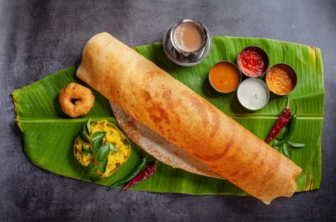

1 cup urad dal (split black gram)
2 cups rice (parboiled rice or idli rice preferred)
1/2 teaspoon fenugreek seeds (optional)
1/2 teaspoon salt (or to taste)
Water (as needed)
1. Preparing the Batter:
Soak the rice and urad dal (and fenugreek seeds if using) in separate bowls for at least 4-6 hours or overnight.
Drain the rice and urad dal.
Blend the urad dal with a little water to a smooth paste.
Blend the rice to a coarse paste.
Combine the rice and urad dal pastes in a large bowl.
Add salt and mix well. Adjust the consistency with water if needed.
Cover and let the batter ferment in a warm place for 8-12 hours or overnight.
2. Preparing the Potato Filling:
Boil the potatoes until tender. Drain, cool slightly, and then mash them. Set aside.
Heat oil in a pan over medium heat.
Add mustard seeds and let them splutter.
Add cumin seeds, chana dal, urad dal, and a pinch of asafetida. Sauté for a minute.
Add chopped green chilies and onions. Sauté until onions become translucent.
Add turmeric powder and mix well.
Add the mashed potatoes and salt. Mix thoroughly and cook for 5-7 minutes.
Add chopped coriander leaves and lemon juice. Mix well and remove from heat.
3. Making Masala Dosa:
Heat a non-stick or cast iron griddle (tawa) over medium-high heat.
Grease the surface lightly with oil or ghee.
Pour a ladleful of batter onto the center of the griddle.
Spread the batter in a circular motion to form a thin, even layer.
Drizzle a little oil or ghee around the edges and on top of the dosa.
Cook for 1-2 minutes until the edges turn golden brown and crispy.
Spoon a portion of the potato filling in the center of the dosa.
Fold the dosa over the filling, or you can roll it if you prefer.
Cook for an additional minute if needed to crisp up the folded dosa.
4. Serving:
Serve hot with coconut chutney, sambar, or any other side dishes of your choice.
